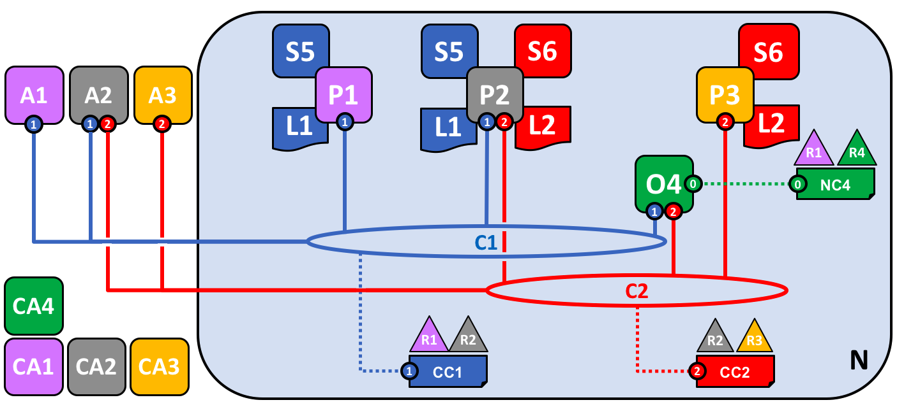
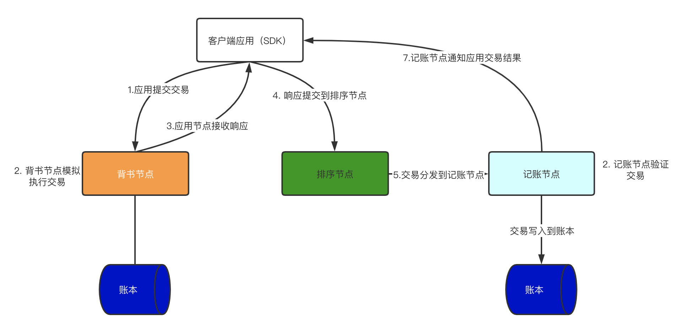
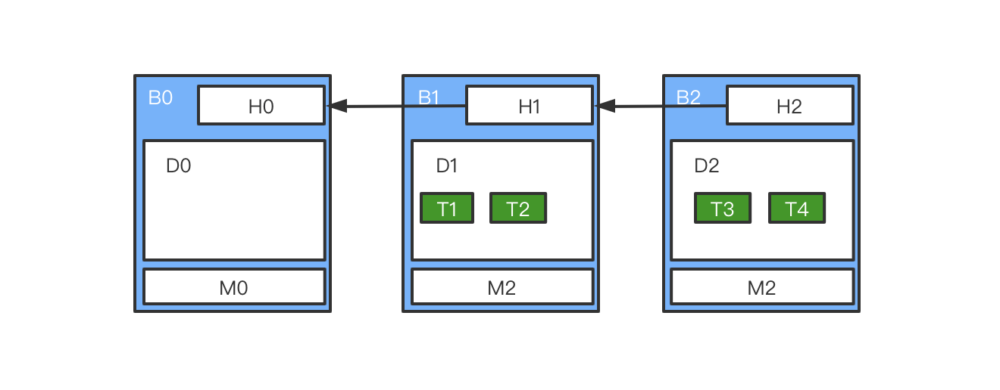
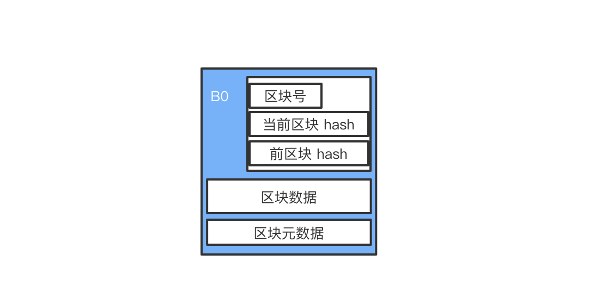
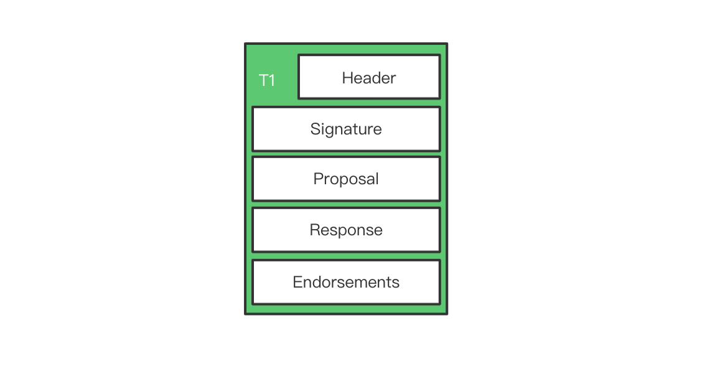
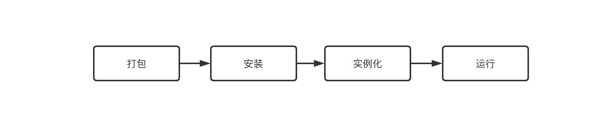
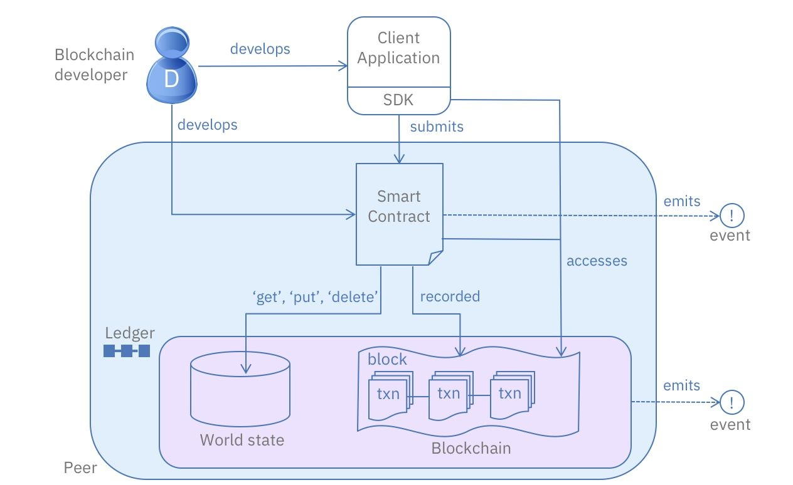

浅析 Fabric Peer 节点
1. Fabric 简介
Hyperledger Fabric，也称之为超级账本，是由 IBM 发起，后成为 Linux 基金会 Hyperledger 中的区块链项目之一。
Fabric 是一个提供分布式账本解决方案的平台，底层的账本数据存储使用了区块链。区块链平台通常可以分为公有链、联盟链和私有链。公有链典型的代表是比特币这些公开的区块链网络，谁都可以加入到这个网络中。联盟链则有准入机制，无法随意加入到网络中，联盟链的典型例子就是 Fabric。
Fabric 不需要发币来激励参与方，也不需要挖矿来防止有人作恶，所以 Fabric 有着更好的性能。在Fabric 网络中，也有着诸多不同类型的节点来组成网络。其中 Peer 节点承载着账本和智能合约，是整个区块链网络的基础。在这篇文章中，会详细分析 Peer 的结构及其运行方式。
在本文中，假设读者已经了解区块链、智能合约等概念。
本文基于 Fabric1.4 LTS。
2. 网络结构
区块链网络是一个分布式的网络，Fabric 也是如此，由于 Fabric 是联盟链，需要准入机制，所以在网络结构上会复杂很多，下面是一个简化的 Fabric 网络：

各个元素的含义如下：
- A：表示客户端节点，也就是用户的应用
- CA：表示 CA 证书节点
- P：表示 peer 节点
- O：表示 Orderer 节点
- L：表示账本
- C：表示 Channel
- CC：表示 Channel 配置
- R：表示组织
- S：表示智能合约
- NC：表示 Fabric 网络配置
对于 Fabric 网络，外部的用户需要通过客户端应用，也就是图中的 A1、A2 或者 A3 来访问网络，客户端应用需要通过 CA 证书表明自己的身份，这样才能访问到 Fabric 网络中有权限访问的部分。
在上面的网络中，共有四个组织，R1、R2、R3 和 R4。其中 R4 是整个 Fabric 网络的创建者，网络是根据 NC4 配置的。
在 Fabric 网络中，不同的组织可以组成联盟，不同的联盟之间数据通过 Channel 来隔离。Channel 中的数据只有该联盟中的组织才能访问，每一个新的 Channel 都可以认为是一条新的链。与其他的区块链网络中通常只有一条链不一样，Fabric 可以通过 Channel 在网络中快速的搭建出一个新的区块链。
上面 R1 和 R2 组成了一个联盟，在 C1 上交易。R2 同时又和 R3 组成了另外一个联盟，在 C2 上交易。R1 和 R2 在 C1 上交易时，对 R3 是不可见的，R2 和 R3 在 C2 上交易时，对 R1 是不可见的。Channel 机制提供了很好的隐私保护能力。
Orderer 节点是整个 Fabric 网络共有的，用来为所有的交易排序、打包。比如上面网络中 O4 节点。本文不会对 Orderer 节点进行详细说明，可以把这个功能理解为比特币网络中的挖矿过程。
Peer 节点表示网络中的节点，通常一个 Peer 就表示一个组织，Peer 是整个区块链网络的基础，是智能合约和账本的载体，Peer 也是本文讨论的重点。
一个 Peer 节点可以承载多套账本和智能合约，比如 P2 节点，既维护了 C1 的账本和智能合约，也维护了 C2 的账本和智能合约。
3. 交易流程
为了可以更深入了解 Peer 节点的作用，先了解一下 Fabric 整体的交易流程。整体的交易流程图如下：

Peer 节点按照功能来分可以分为背书节点和记账节点。
客户端会提交交易请求到背书节点，背书节点开始模拟执行交易，在模拟执行之后，背书节点并不会去更新账本数据，而是把这个交易进行加密和签名，然后返回给客户端。
客户端收到这个响应之后就会把响应提交到 Orderer 节点，Orderer 节点会对这些交易进行排序，并打包成区块，然后分发到记账节点，记账节点就会对交易进行验证，验证结束之后，就会把交易记录到账本里面。
一笔交易是否能成功是根据背书策略来指定的，每一个智能合约都会指定一个背书策略。
4. Peer 节点
Peer 节点代表着联盟链中的各个组织，区块链网络也是由 Peer 节点来组成的，而且也是账本和智能合约的载体。
通过对上面交易过程的了解可以知道，Peer 节点是主要的参与方。如果用户想要访问账本资源，都必须要和 peer 节点进行交互。在一个 Peer 节点中，可以同时维护多个账本，这些账本属于不同的 Channel 。每个 Peer 节点都会维护一套冗余账本，这样就避免了单点故障。
Peer 节点根据在交易中的不同角色，可以分成背书节点（Endorser）和记账节点（Committer），背书节点会对交易进行模拟执行，记账节点才会真正将数据存储到账本中。
账本
账本可以分成两个部分，一部分是区块链，另一部分是 Current State，也被称之为 World State。
区块链上只能追加，不能对过去的数据进行修改，链上也包含两部分信息，一部分是通道的配置信息，另一部分是不可修改，序列化的记录。每一个区块记录前一个区块的信息，然后连成链，如下图所示：

第一个区块被称之为 genesis block，其中不存储交易信息。每个区块可以被分为区块头、区块数据和区块元数据。区块头中存储着当前区块的区块号、当前区块的 hash 值和上一个区块的 hash 值，这样才能把所有的区块连接起来。区块数据中包含了交易数据。区块元数据中则包括了区块写入的时间、写入人及签名。

其中每一笔交易的结构如下，在 Header 中，包含了 ChainCode 的名称、版本信息。Signature 就是交易发起用户的签名。Proposal 中主要是一些参数。Response 中是智能合约执行的结果。Endorsements 中是背书结果返回的结果。

WorldState中维护了账本的当前状态，数据以 Key-Value 的形式存储，可以快速查询和修改，每一次对 WorldState 的修改都会被记录到区块链中。WorldState 中的数据需要依赖外部的存储，通常使用 LevelDB 或者 CouchDB。
区块链和 WorldState 组成了一个完整的账本，World State 保证的业务数据的灵活变化，而区块链则保证了所有的修改是可追溯和不可篡改的。
在交易完成之后，数据已经写入账本，就需要将这些数据同步到其他的 Peer，Fabric 中使用的是 Gossip 协议。Gossip 也是 Channel 隔离的，只会在 Channel 中的 Peer 中广播和同步账本数据。
智能合约
智能合约需要安装到 Peer 节点上，智能合约是访问账本的唯一方式。智能合约可以通过 Go、Java 等变成语言进行编写。
智能合约编写完成之后，需要打包到 ChainCode 中，每个 ChainCode 中可以包含多个智能合约。ChainCode 需要安装，ChainCode 需要安装到 Peer 节点上。安装好了之后，ChainCode 需要在 Channel 上实例化，实例化的时候需要指定背书策略。

智能合约在实例化之后就可以用来与账本进行交互了，流程图如下：

用户编写并部署实例化智能合约之后，就可以通过客户端应用程序来向智能合约提交请求，智能合约会对 WorldState 中数据进行 get、put 或者 delete。其中 get 操作直接从 WorldState 中读取交易对象当前的状态信息，不会去区块链上写入信息，但 put 和 delete 操作除了修改 WorldState，还会去区块链中写入一条交易信息，且交易信息不能修改。
区块链上的信息可以通过智能合约访问，也可以在客户端应用通过 API 直接访问。
Event 是客户端应用和 Fabric 网络交互的一种方式，客户端应用可以订阅 Event，当 Event 发生时，客户端应用就会接受到消息。
事件源可以两类，一类是智能合约发出的 Event，另一类是账本变更触发的 Event。用户可以从 Event 中获取到交易的信息，比如区块高度等信息。
5. 小结
在这篇文章中，首先介绍了 Fabric 整体的网络架构，通过对 Fabric 交易流程的分析，讨论了 peer 节点在交易中的作用，然后详细分析了 peer 节点所维护的账本和智能合约，并分析了 peer 节点维护账本以及 peer 节点执行智能合约的流程。
文 / Rayjun
REF
[1] https://hyperledger-fabric.readthedocs.io/zh_CN/release-1.4/whatis.html
[2] https://developer.ibm.com/zh/technologies/blockchain/series/os-academy-hyperledger-fabric/